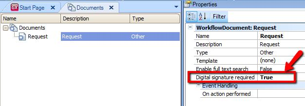
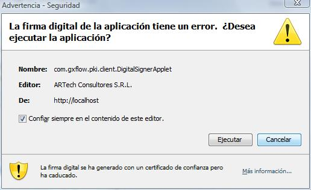
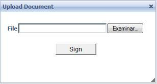
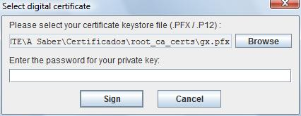
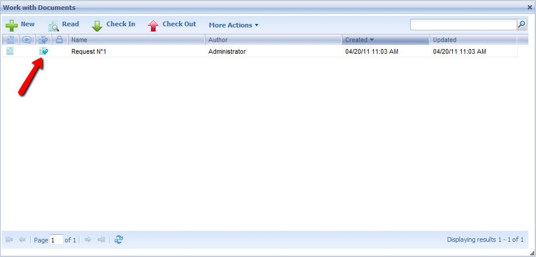
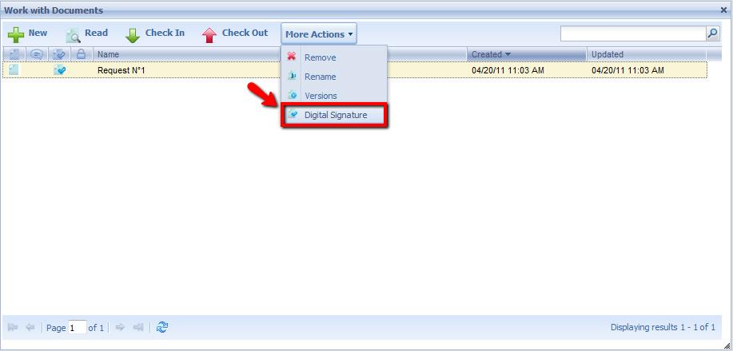
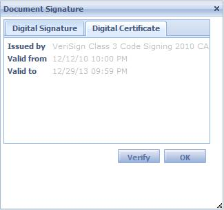

Digitally sign documents allows verifying that a document has not been altered and that it was signed using a reliable certificate. Deprecated: Since GeneXus 16 upgrade 4 (*). Replaced by An API to integrate with your Digital signature module.
(*) What has been deprecated is not the complete functionality. What has been deprecated is the module that signs locally (an Applet) due to today's browser restrictions.
To use this feature, you need PKI (Public Key Infrastructure) knowledge. The following algorithms are used to obtain a digital signature: - SHA-1 for document dispersion Previous stepsPrevious settings are required before being able to use this feature in a GXflow application. These settings depend on each platform, as explained below: .NET Settings
Java Settings
Certificates and revocation lists stored in these directories must be in DER format. GeneXus IDE SettingsIn GeneXus IDE, when creating or modifying a document in Preferences -Workflow-Documents option, you can select whether or not a document requires a digital signature. To do so, set the property Digital Signature Required true.  GXflow Client SettingsIn GXflow client Server preferences, enable the document's digital signature feature through the Settings - Advanced - Document management – Enable Digital Signature preference. In Java besides, you must setup the Certificates Directory Preference in Settings – Advanced – Document Management – Certificates Directory and specify the certificate directories mentioned above. Signing Documents in GXflow ClientWhen a user checks in a document that requires a digital signature, the document upload form will include a java applet for this purpose. This applet is digitally signed by Artech and the browser will ask for user permission to activate it the first time it is used in the client.  Once this applet is activated, a Sign button will be added to the upload form. To sign a document, follow these steps:

 In the server, the digital signature will be verified to confirm that the document has not been altered during transmission. In addition, the certificate used to sign the document will be verified to confirm that it hasn't expired. Its reliability is also checked to confirm that it was issued by a reliable certifying entity. If this verification is successful, the document will be accepted by the GXflow document repository. Viewing Signed Document DataIn all GXflow client applications that display documents (My Documents, Work With Documents, etc.), a column for signed documents is included in the document grid.    Managing User CertificatesCertificates used by a user to sign documents are kept in the server, associated to the user. These certificates are shown in the users' ABM, in each user's data. By default, when a user signs a document, the used certificate is automatically added after verifying that it is reliable and it doesn't belong to the user certificates group yet. Thus, only an administrator user will be able to add to or remove certificates from application users (through the users ABM dialog of the management console). Users will not be able to sign documents using a certificate that is not associated to their user accounts, regardless of whether or not they are valid and reliable certificates.
|
| Backlinks |
| Toc:GeneXus BPM Suite |